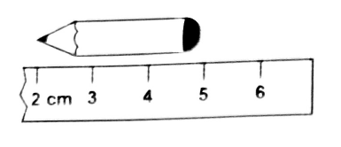
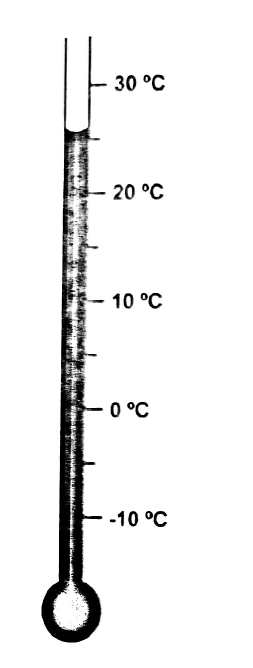
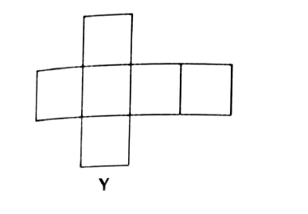
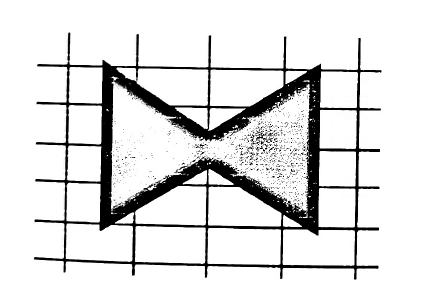
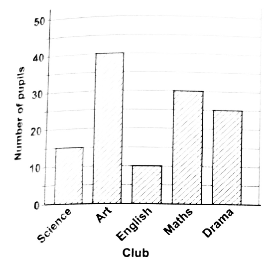

Q1 The value of the 4 in the numeral 3495 is expressed as
A 4 × 10
B 4 × 100 ✓
C 4 × 1000
In 3495 the digits are 3 thousands, 4 hundreds, 9 tens, 5 ones. The 4 sits in the hundreds place, so its value is 4 × 100 = 400.
Q2 Which digit in the number 68 900 has the greatest value?
A 6 ✓
B 8
C 9
Read each digit's place value: 6 → 60 000, 8 → 8 000, 9 → 900. The 6 has the greatest value because it's in the ten-thousands place.
Q3 John chose a number, doubled it and subtracted 5 from the answer. The result was 45. What number did John choose?
A 20
B 25 ✓
C 50
Work backwards. Add the 5 back: 45 + 5 = 50. Then halve (undo the doubling): 50 ÷ 2 = 25.
Q4 Which of the following lists contains only prime numbers?
A 1, 7, 15, 29
B 9, 13, 23, 45
C 2, 19, 61, 97 ✓
A prime number has exactly two factors: 1 and itself. Test each list:
A — 1 is not prime (only one factor); 15 = 3 × 5. ✗
B — 9 = 3 × 3; 45 = 9 × 5. ✗
C — 2, 19, 61 and 97 are all prime. ✓
Q5 The number 2.45 rounded off to the nearest whole number is
A 1
B 2 ✓
C 3
The decimal part is 0.45, which is less than 0.5, so we round down to 2.
Fractions
Questions 6–15
Q6 The sum of 1⁄4 and 2⁄3 is
A5⁄12
B3⁄7
C11⁄12 ✓
Common denominator is 12. 1⁄4 = 3⁄12 and 2⁄3 = 8⁄12. Sum = 3⁄12 + 8⁄12 = 11⁄12.
Q7 Ishmael is 3 times as old as his sister Anya. The sum of their ages is 36 years. How old is Ishmael?
A 27 ✓
B 18
C 9
Let Anya's age = x. Then Ishmael's age = 3x. Sum: x + 3x = 4x = 36, so x = 9 (Anya). Ishmael = 3 × 9 = 27.
Q8 P is an odd number and Q is an even number. Which of the following statements about P and Q is always FALSE?
A The sum of P and Q is odd.
B The product of P and Q is even.
C The difference between P and Q is even. ✓
Odd ± even = odd (always). Odd × even = even (always). So:
A sum P + Q is odd → always TRUE.
B product P × Q is even → always TRUE.
C difference P − Q is odd, NOT even → always FALSE. ✓
Q9 A unit fraction has a ________ of 1.
A value
B numerator ✓
C denominator
A unit fraction is one whole part out of many — for example 1⁄2, 1⁄3, 1⁄10. The numerator (top number) is always 1; the denominator changes.
Q10 8 5⁄7 written as an improper fraction is
A40⁄7
B61⁄7 ✓
C85⁄7
Multiply the whole number by the denominator, add the numerator, and put the result over the original denominator: (8 × 7) + 5 = 56 + 5 = 61. So 85⁄7 = 61⁄7.
Q11 If N + 2 results in a prime number, which of the following numbers represents N?
A 14
B 19
C 21 ✓
Test each option in N + 2: 14 + 2 = 16 (= 2 × 8, not prime). 19 + 2 = 21 (= 3 × 7, not prime). 21 + 2 = 23 ✓ (prime — only factors 1 and 23).
Q12 The symbol that will make the statement 2/3 ◯ 4/6 true is
A <
B >
C = ✓
4⁄6 simplifies to 2⁄3 (divide top and bottom by 2). So the two fractions are equal.
Q13 The fractions 1⁄3, 6⁄9, 3⁄4, 7⁄12 written in ASCENDING order (smallest to largest) is
A1⁄3, 7⁄12, 6⁄9, 3⁄4 ✓
B3⁄4, 6⁄9, 7⁄12, 1⁄3
C7⁄12, 6⁄9, 3⁄4, 1⁄3
Convert each to a decimal: 1⁄3 ≈ 0.333, 6⁄9 = 2⁄3 ≈ 0.667, 3⁄4 = 0.75, 7⁄12 ≈ 0.583. From smallest to largest: 0.333, 0.583, 0.667, 0.75 → 1⁄3, 7⁄12, 6⁄9, 3⁄4.
Q141⁄2 ÷ 2⁄3 =
A1⁄3
B3⁄4 ✓
C3⁄2
Keep, change, flip — keep the first fraction, change ÷ to ×, flip the second: 1⁄2 × 3⁄2 = 3⁄4.
Q15 The length of a water pipe is 7 m. How many pieces, each measuring 1⁄4 m, can be cut from the pipe?
A 71⁄4
B 11
C 28 ✓
"How many 1⁄4-m pieces fit in 7 m?" means 7 ÷ 1⁄4 = 7 × 4 = 28 pieces.
Decimals & percentages
Questions 16–21
Q16 Which of the following lists shows the decimals arranged in DESCENDING order (largest to smallest)?
A 0.92, 0.902, 0.29, 0.090 ✓
B 0.29, 0.090, 0.92, 0.902
C 0.090, 0.29, 0.902, 0.92
Compare digit-by-digit from the left. 0.92 > 0.902 > 0.29 > 0.090. (0.92 vs 0.902: tenths are equal at 9, hundredths 2 > 0.)
Q17 The cost of 4 apples is $4.48. What is the cost of 10 similar apples?
A $11.20 ✓
B $19.20
C $44.80
Find the cost of one apple: $4.48 ÷ 4 = $1.12. Then 10 apples cost 10 × $1.12 = $11.20.
Q18 In a class, 21⁄2 pans of cake were shared equally among 10 children. What portion of a cake did each child get?
A 0.10
B 0.25 ✓
C 2.50
21⁄2 ÷ 10 = 5⁄2 ÷ 10 = 5⁄20 = 1⁄4 = 0.25 of a pan per child.
Q19 3.3% expressed as a decimal is
A 0.033 ✓
B 0.33
C 3.03
To turn a percent into a decimal, divide by 100 (move the decimal two places to the left): 3.3 ÷ 100 = 0.033.
Q20 Liam scored 12 of 40 points for the school's basketball team. What percentage of the total points was scored by the other members of the team?
A 28%
B 30%
C 70% ✓
Liam's share = 12 ⁄ 40 = 3⁄10 = 30%. So the others scored 100% − 30% = 70%.
Q21 A furniture store sold chairs at a price of $600 each. A damaged chair was sold for $450. What was the percentage loss on this chair?
A 25% ✓
B 50%
C 75%
Loss = $600 − $450 = $150. Percentage loss = (loss ⁄ original price) × 100 = (150 ⁄ 600) × 100 = 25%.
Ratio & proportion
Questions 22–23
Q227⁄8 expressed as a ratio is
A 1 : 2
B 7 : 8 ✓
C 8 : 7
A fraction a⁄b is just the ratio of part to whole, a : b. So 7⁄8 ⇒ 7 : 8.
Q23 To make one costume, a seamstress uses 3 materials, satin, wool and lace, in the ratio 6 : 2 : 3 respectively. How many costumes did she make when she used the materials in the ratio 30 : 10 : 15?
A 10
B 8
C 5 ✓
Each costume uses 6 + 2 + 3 = 11 parts. Compare each material in the new ratio to the original: 30 ÷ 6 = 5, 10 ÷ 2 = 5, 15 ÷ 3 = 5. All three give 5, so she made 5 costumes.
Measurement
Questions 24–37 — mass, time, money, length, area, perimeter, temperature
Q24 A package weighed 1.5 kg. After removing some items from the package, it weighed 1 kg. What was the weight of the items that were removed?
A 5 g
B 500 g ✓
C 1 000 g
Mass removed = 1.5 − 1 = 0.5 kg. Convert to grams (1 kg = 1 000 g): 0.5 × 1 000 = 500 g.
Q25 The open surface of a plot of land can be BEST described as the
A area ✓
B volume
C perimeter
Area measures the surface (in m² or similar). Volume measures 3-D space; perimeter measures the boundary length.
Q26 What is 7:30 p.m. written in the 24-hour format?
A 19:30 hrs ✓
B 18:30 hrs
C 21:30 hrs
For p.m. times, add 12 hours: 7 + 12 = 19. So 7:30 p.m. = 19:30 hrs.
Q27 Kelvin has an equal number of 25-cent coins and 50-cent coins in his piggy bank. Altogether, the coins add up to $9. How many 25-cent coins does he have?
A 6
B 9
C 12 ✓
Let x be the number of each kind of coin. Total: 25x + 50x = 900 cents (= $9). 75x = 900, so x = 12. He has 12 of each.
Q28 The area of a square is 144 cm². What is the perimeter, in cm, of the same square?
A 24
B 36
C 48 ✓
Side of the square = √144 = 12 cm. Perimeter = 4 × side = 4 × 12 = 48 cm.
Q29 A toy shop sells dolls for $10.25, balls for $2.00, and skipping ropes for $3.50. Alexa bought some items and paid exactly $12.50. This means she bought
Q30 Tom measured his pencil using a ruler with markings 2 cm to 6 cm. The length of Tom's pencil is approximately
A 3 cm ✓
B 4 cm
C 5 cm
When measuring with a ruler that doesn't start at zero, take the difference between the two endpoints. The pencil's pointy tip is at the 2 cm mark and its flat end sits at the 5 cm mark, so its length is 5 − 2 = 3 cm.

Q31 The rate of exchange at a bank is BDS$1.00 = EC$1.44. Ashley changed BDS$500.00 into EC dollars. She spent EC$415.00. How many EC dollars did she have left?
A $7.20
B $85.00
C $305.00 ✓
Step 1 — convert BDS$500 to EC$: 500 × 1.44 = EC$720. Step 2 — subtract what she spent: 720 − 415 = EC$305.
Q32 What is the missing value? 0.7 km = ____ m
A 70
B 700 ✓
C 7000
1 km = 1 000 m, so 0.7 km = 0.7 × 1 000 = 700 m.
Q33 A clock shows 3:25 p.m. The time 40 minutes later will be
A 2:45 p.m.
B 4:00 p.m.
C 4:05 p.m. ✓
3:25 + 40 minutes. Add 35 minutes to reach 4:00, then 5 more minutes → 4:05 p.m.
Q34 A motorcycle travels at an average speed of 30 km per hour. How many minutes will it take to travel 20 km?
A 25
B 40 ✓
C 50
Time = distance ÷ speed = 20 ⁄ 30 = 2⁄3 of an hour. Convert to minutes: 2⁄3 × 60 = 40 minutes.
Q35 Patrick had a total of $0.89 in coins in his pocket. He lost three 25-cent pieces while playing. How much money did he have left?
A $0.14 ✓
B $0.64
C $0.75
Three 25-cent pieces = 3 × $0.25 = $0.75. Money left = $0.89 − $0.75 = $0.14.
Q36 A 12 cm by 4 cm rectangle has its diagonal drawn from the top-left to the bottom-right corner. The triangular region above the diagonal is shaded. Its area is
A 16 cm²
B 24 cm² ✓
C 48 cm²
Area of full rectangle = 12 × 4 = 48 cm². The diagonal cuts the rectangle into two equal triangles, so each shaded triangle has area 48 ÷ 2 = 24 cm².
Q37 A thermometer is marked from −10 °C to 30 °C. The mercury sits between the 20 °C and 30 °C marks, slightly above the halfway point. The thermometer's reading is MOST accurately represented as
A 20 °C
B 25 °C
C 26 °C ✓
The mercury level falls just past the midpoint (25 °C) of the 20–30 °C interval. Of the choices given, 26 °C is the most accurate reading. (20 °C undersells; 25 °C is exactly the midpoint, but the line is clearly above that.)

Geometry & shapes
Questions 38–45
Q38 Two straight lines cross each other at a single point. The lines can be described as
A parallel
B intersecting ✓
C perpendicular
Lines that cross each other are intersecting. Parallel lines never meet; perpendicular lines meet at a 90° angle (a special kind of intersecting).
Q39 Three plane shapes are shown — I = square, II = pentagon, III = circle. Which of the shapes are polygons?
A I and II only ✓
B II and III only
C I, II and III
A polygon is a closed shape made of straight line segments. The square (I) and pentagon (II) qualify. The circle (III) has a curved boundary, so it is not a polygon.
Q40 A cross-shaped net (six rectangular pieces in a "T" / "+" arrangement) labelled Y is shown. The net represents a
A cube ✓
B cuboid
C cylinder
The net Y is made of six equal squares arranged in a "+" cross. When folded, each square becomes one face of a cube. (A cuboid would need rectangular faces of two different sizes; a cylinder has curved surfaces and only two flat circular ends.)

Q41 A "bow-tie" shape (two triangles meeting at a point) is shown on a grid. How many lines of symmetry does the shape have?
A 1
B 2 ✓
C 3
Imagine folding the shape so the two halves match exactly:
Horizontal fold (left mirrors right) ✓
Vertical fold (top mirrors bottom) ✓
Two valid folds, so 2 lines of symmetry.

Q42 A triangle has angles 97° and 33° marked, with side lengths 10 cm and 12 cm. The triangle is BEST described as
A scalene ✓
B isosceles
C equilateral
Find the third angle: 180° − 97° − 33° = 50°. The three angles 97°, 50°, 33° are all different, so all three sides are different lengths too — that's a scalene triangle. (Isosceles needs two equal sides; equilateral needs three equal sides + three 60° angles.)
Q43 An angle which measures 185° is described as
A reflex ✓
B obtuse
C straight
Angle classification: acute < 90°, right = 90°, obtuse 90°–180°, straight = 180°, reflex 180°–360°. 185° lies just past 180°, so it's a reflex angle.
Q44 Three solids P, Q, R have these features:
Shape
Face(s)
Vertices
Edges
P
6
8
12
Q
3
0
2
R
1
0
0
Which of the following groups of solids represents the three-dimensional shapes P, Q and R respectively?
A Cuboid, cube, cylinder
B Cylinder, cube, sphere
C Cuboid, cylinder, sphere ✓
P — 6 faces, 8 vertices, 12 edges → matches a cuboid (a cube fits this too, but only "cuboid" appears as the first item in the C option). Q — 3 faces (2 circles + 1 curved surface), 0 vertices, 2 edges (the two circular rims) → a cylinder. R — 1 curved face, 0 vertices, 0 edges → a sphere.
Q45 Which of the following shapes is NOT an example of a parallelogram?
A Kite ✓
B Square
C Rhombus
A parallelogram has two pairs of parallel sides. A square (yes), a rhombus (yes — slanted square) and a rectangle all qualify. A kite has two pairs of adjacent equal sides but its opposite sides are not parallel, so it is not a parallelogram.
Statistics & data handling
Questions 46–50
Q46 The shoe sizes of 10 boys are 7, 8.5, 8, 9, 6, 10, 7, 6, 7, 9. What is the modal shoe size?
A 9
B 7 ✓
C 6
The mode is the most-frequent value. Tally the data: 6 appears 2 times, 7 appears 3 times, 8 once, 8.5 once, 9 twice, 10 once. The mode is 7.
Q47 The runs scored by 3 batsmen — Shivdas Chatterpaul: 47, Devon Sammy: ?, Charles Powell: 53. The mean number of runs scored by the 3 batsmen was 55. How many runs did Devon Sammy score?
A 65 ✓
B 100
C 165
Total runs = mean × number of values = 55 × 3 = 165. Subtract the two known scores: 165 − 47 − 53 = 65 runs.
Questions 48–50 refer to the bar graph "Number of pupils who joined various clubs in a school." Bars: Science = 15, Art = 40, English = 10, Maths = 30, Drama = 25.

Q48 How many pupils joined the Drama club?
A 10
B 20
C 25 ✓
Read the height of the Drama bar — it reaches 25 on the y-axis.
Q49 How many more pupils joined the Science club than the English club?
1. B | 2. A | 3. B | 4. C | 5. B | 6. C | 7. A | 8. C | 9. B | 10. B
11. C | 12. C | 13. A | 14. B | 15. C | 16. A | 17. A | 18. B | 19. A | 20. C
21. A | 22. B | 23. C | 24. B | 25. A | 26. A | 27. C | 28. C | 29. B | 30. A
31. C | 32. B | 33. C | 34. B | 35. A | 36. B | 37. C | 38. B | 39. A | 40. A
41. B | 42. A | 43. A | 44. C | 45. A | 46. B | 47. A | 48. C | 49. A | 50. B
Solutions generated by Kairu — Student Hub's AI system, trained by The Student Hub. AI can make mistakes — always cross-check tricky answers with your teacher.